设计自查总结🔥
为什么设计自查
在互联网敏捷开发迭代的过程中，设计自查可以提供全面的检测，为上下游更高效的合作提供一个完整的设计方案。
设计方案的完整，指的是在自查阶段，考虑设计文件是否符合业务流程，页面的层级关系、信息区分及设计的扩展性。保证设计方案的完整是设计师的职业素养，对自己的产出进行查漏补缺，设计出符合需求的页面并保障产品顺利进行。
而一个好的习惯也可以避免不好的影响，提高工作效率，让我们有更多的时间精力进行更有价值的事情。
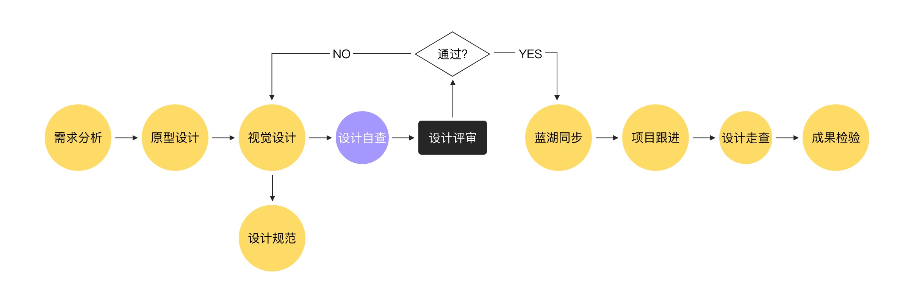
容易遇到的问题
在很多互联网企业中，设计师有可能会遇到如下问题：
- 对需求不了解，直接跳入细节设计；
- 设计时间被无限压缩；
- 一人支持跟进多个项目；
- …
在目标导向设计中，设计师应该先站在一个高的角度了解产品行为的整个架构然后在进行精细化的设计，这样才能够保证设计完成后与产品目标保持一致。
在部分小型创业团队，团队成员有时不愿按照流程进行，这时候需要我们在加强自身专业能力的同时，与团队成员积极沟通，在团队内达成设计流程的共识并制定相关的措施。比如说，制定设计流程，让团队成员对设计有所认知；预留设计走查的时间，包括自查时间、开发后的走查时间，这些都需要放到整个项目的排期内。
设计是为了更好地解决问题，这是我加入设计行业之后一直坚信的原则，也是在团队内保持和各个部门合作的原则。虽然有时候会有所误解，但相信我们的努力一定会得到回馈的。
如何进行设计自查
接下来我们将从以下四个大的维度进行设计自查说明：
- 视觉设计；
- 交互反馈；
- 特殊场景；
- 文件交付；
1. 视觉设计
视觉设计包含了视觉标准、视觉信息架构、以及已有视觉风格的应用，设计师走查的原则就是传达品牌风格的同时保持标准化、一致性、最小化视觉传达高效的信息。
1.1 平台设计标准
不同的平台设计标准是不一样的，要按照所在平台的规范来选择尺寸。标准化带来的一致性给用户带来了易学易用。设计师需要考虑不同的平台是否单独出设计稿，以安卓和iOS 平台的图标为例：
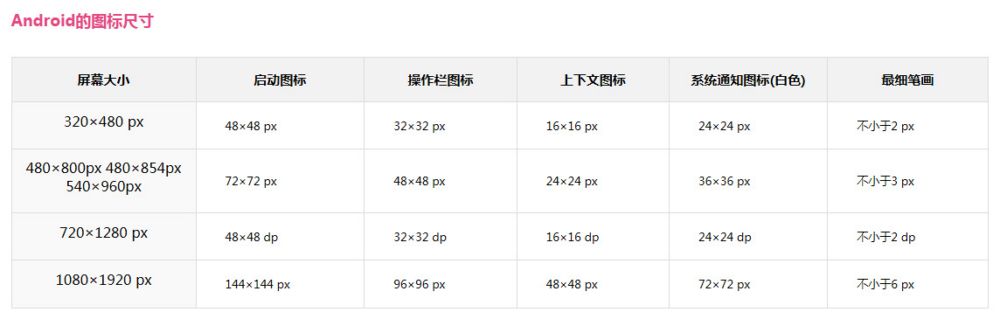
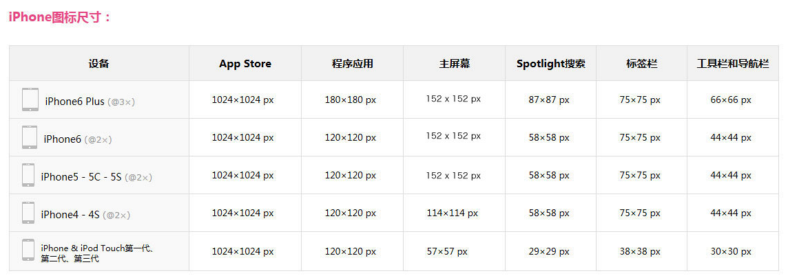
1.2 信息结构
当我们对于产品定位没有清晰认知的情况下，对于类似的需求可能会对页面上的信息传达过于均衡，每个信息都需要放大，每个信息都需要加强，每个信息都需要让用户获取到，在工作场景中，我们就会经常遇到：
- 这个信息需要放大；
- 这块儿提示信息要强化；
- 这部分内容虽然不重要但需要让用户知道；
- …
诸如此类的情况，我们需要一个判断信息重要与否的标准来更好地权衡信息重要程度，使页面信息更有逻辑更加清晰。在众多设计原理中，格式塔原理一直被广泛应用，它可以很好的梳理界面信息结构、层级关系，从而提升设计的可读性。在自查过程中，我们可以通过格式塔原理检验页面中的元素是否符合标准。
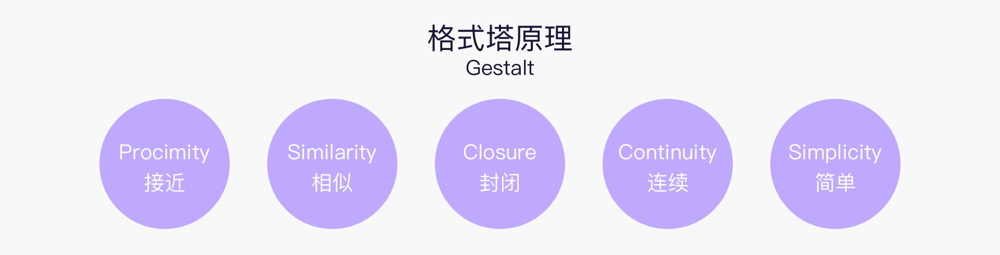
以相似性在 MONO、开眼、ONE 中的应用为例，我们可以发现，产品中相似的内容在页面中形成一个小的整体，向用户传递他们之间的相关联性，在视觉上营造视觉层次，可以很好的指导走查视觉元素的信息架构。
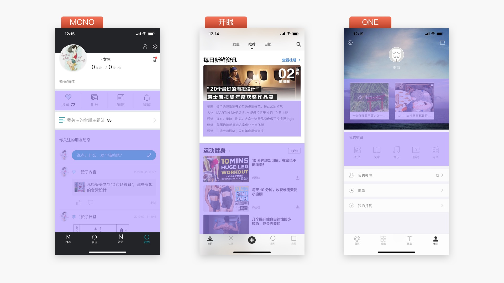
自查信息结构时需要考虑的点：
- 整体信息结构是否清晰？
- 页面的信息层级是否合理？
- 浏览路径是否符合浏览路径？
- …
1.3 文字
文字是产品的重要组成部分，是产品传达给用户的主要内容，对产品有非常大的影响，自查中需要把关文字是否符合平台规范。通常一款产品在设计之前会制定 Guideline，对文字的类型、字号及颜色进行规范。
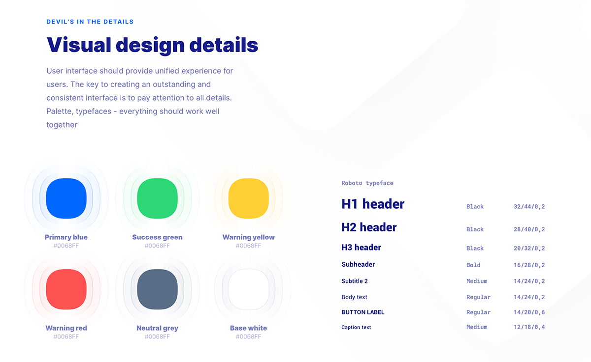
文字的类型、字号、颜色、行距、对齐方式都是走查需要注意的细节，因为很多时候开发和我们的视角不一样，有些细微之处是看不出来的。可参考以下四点对页面进行自查：
- 字体类型的数量遵守移动端规范，种类控制在 2-3 种以内，中英文及数字是否风格统一？
- 字号的大小、粗细，是否能够清晰的区分信息层级？
- 文字的颜色，在应用场景中是否具有强光环境下的可阅读性？品牌色、强调色运用是否合理？
- 对齐方式、大小写、日期等显示格式在不同页面是否统一？
- 文字溢出样式是否符合规范？
- …
1.4 图标
在界面中，图标不是单独的个体，每个应用内的图标都应该具有相同风格的图标，包括形状、圆角、线条粗细、品牌元素等。
图标在界面中通常是成群结队的出现，所以风格的一致性很容易对比出来。
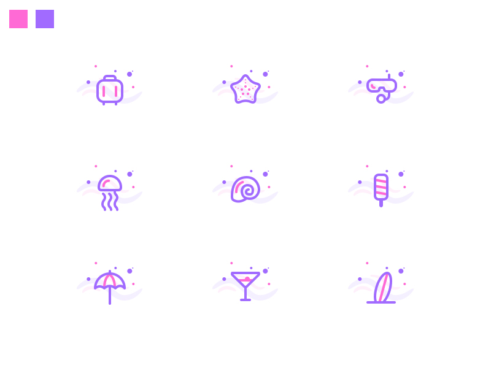
通过以上图片我们可以得出：统一的尺寸、统一的色彩、统一的圆角处理、统一的线条、统一的辅助形状，保持了每套图标的整体性。
系统图标还有一点需要注意，那就是尺寸，比如说 tab 栏、导航栏，常用尺寸为48x48px、64x64px。
1.5 图片
设计稿件中通常都会填充一些配图保证页面的完整性，设计师需要保证图片的尺寸、比例且统一。以电商为例，产品的首页、详情页、以及其他页面设计商品相关的页面，其中一个为1:1，那么其他页面应该都是 1:1。其他常见的图片尺寸有16:9、4:3、3:2、1:1和1:0.618（黄金比例）等。
图片自查过程中需要注意的问题：
- 是否符合比例规范
- 图片是否符合产品调性
- 图片视觉方向是否符合页面视觉方向
- …
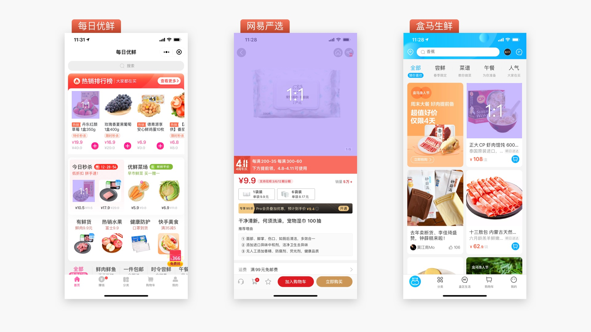
1.6 控件
控件或模块交互样式较多时，需要设计确保设计稿件的可用性，避免遗漏。可以在以下几点进行自测走查：
- 控件外观是否符合用户认知？
- 控件与页面元素间的关系是否表达正确？
- 控件的做种状态是否展示一致？
- 控件是否对元素有干扰？
- …
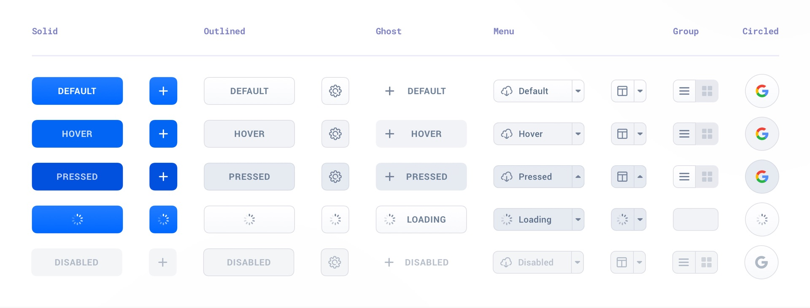
2.交互与反馈
在交互设计精髓 4 中，作者曾提到大多数交互设计与视觉设计原则是跨平台的，对于普通的设计原则和交互细节，不同层面之间的界限不是很分明，这一部分和视觉设计的目标一致，都是将实际需求转化为界面。
2.1 反馈机制
当用户和产品需要交互时，会使用不同的模式反馈信息或结果，为用户在各个阶段提供必要、积极、及时的反馈，避免过度反馈，以免带来不必要的打扰。
常见的三种反馈信息如下，大家可以在此基础上自查是否有反馈、反馈是否传达清晰，是否对用户有即时的相应等细节，：
- 提示信息：如警告、通知，常见形式 Alert、Badge、Popover；
- 过程反馈：加载状态、录入反馈、确认弹窗；
- 结果反馈：全局提示、对话框反馈；
2.2 操作规范
操作规范主要包括两点：
- 可用性
- 容错性
在这两点中，设计师需要检查用户在层级操作中是否达到了最短触达路径？不同的页面同一个功能交互是否一致？对于危险操作是否给予了二次确认？操作后是否可以撤销？以及对操作手势的认知。
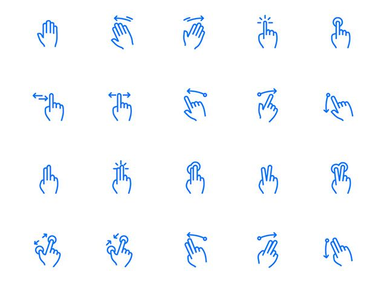
2.3 用户引导
顾名思义，就是对于产品新功能以及对新用户的引导，可以让用户在短时间内快速了解产品，轻松上手体验产品，最终完成自己的使用目标。
针对不同的场景，设计需要设计出不同的引导方案，同时要考虑用户引导是否对不同权限的用户展示同样的引导？新功能提示是否对用户的使用造成了打扰？用户引导的取消机制是什么？
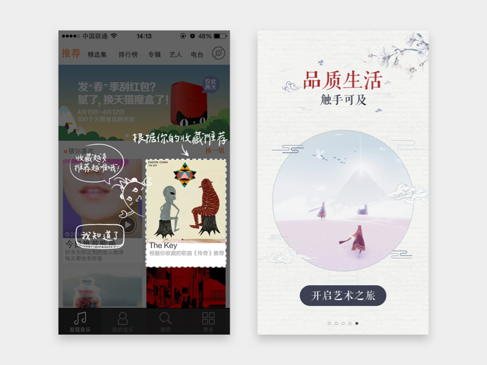
3.特殊场景
特殊场景在设计过程中常常会被忽略，等到在现实中碰到才会意识到缺失异常状态会非常尴尬，所以大家在完成主流程设计后，一定也要考虑到特殊场景。大家可以参照以下几种场景对设计进行自查优化调整。
3.1 网络异常
考虑到网络异常情况时，通常产品会通过异常状态页面或者交互反馈来告知用户当前的异常状态和如何解决问题（解决方案引导、刷新、toast）。
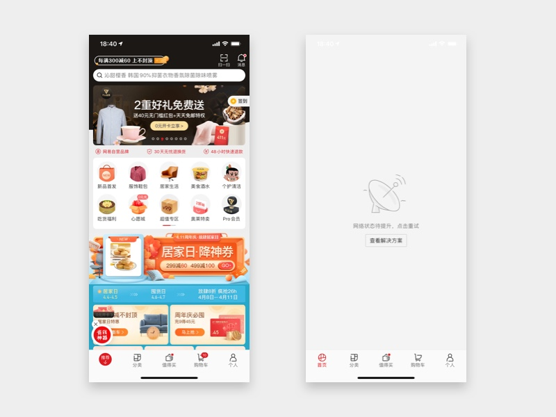
3.2 服务器异常
服务器异常状况较少出现，时间也较短，通常不提示具体原因，设计处理方式为在新页面展示缺省页，文案+插画的形式给与用户提示及重试引导。
3.3 空状态
空状态指的是页面中无内容，主要的几个情况，设计师需要根据不同的场景给出文案+插画的表现形式引导用户：
- 无权限，针对的是某些需要权限开启后才能获取内容的页面；
- 搜索无结果，对应搜索无相应结果的空状态提示；
- 内容为空，如初始状态、内容被清空后的状态。
4.文件交付
最后在我们设计完成后，对接开发同学，这时候我们需要提供符合规则的交付物，除了沟通，交付物会直接影响接下来的产品进程。
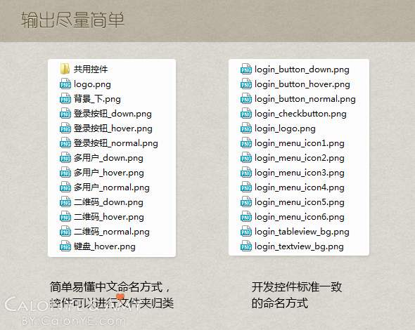
4.1 文档
管理一个好的设计文档对团队协作是非常重要的，文档的命名方式、构成都需要在团队内达成一致，通常需要注意以下几点：
- 设计文件本身的图层规范，包含图层命名、编组；
- 符合团队规范的文档命名和书写格式；
- 版本记录，修改的内容是否清晰准确；
4.2 标注
现在的设计工具非常方便，设计师只需要用 sketch 插件或 Ps 插件就可以一键导出开发同学需要的标注，与 UI 刚兴起那会需要大量时间进行标注完全不同，为设计师节省了很多时间。但有些时候还是需要做一些额外的标注：
- 页面涉及新的功能点及修改；
- 适配问题，考虑小屏、短屏、长屏等不同的机型；
- 动销实现，需要提供动效标注及动画效果展示；
- 文字的断行、文字显示范围、最大值、最小值等；
- …
4.3 资源包
资源包是开发所需切片，输出的切图除了准确、完整，还需要考虑后期的维护成本以及复用、可扩展性，尽量减少切图的数量。
设计走查表
整理了一份设计走查表以供参考，大家可以根据自己的工作场景进行查缺补漏，愉快的和开发小哥哥们合作。下载走查清单完整版
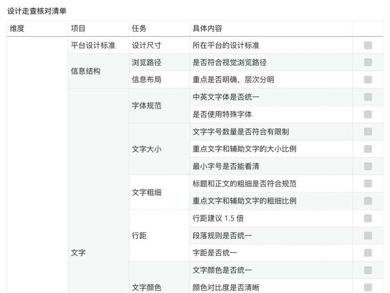
小结
以上是自己在工作中总结的一些经验，希望可以对大家有所帮助，做好设计自查工作，减少协作的工作成本，更高效的与团队成员合作！
学须静，才须学。做一名优秀的设计师还需要继续努力啊，第一次写对外的文章，大家多多指教。